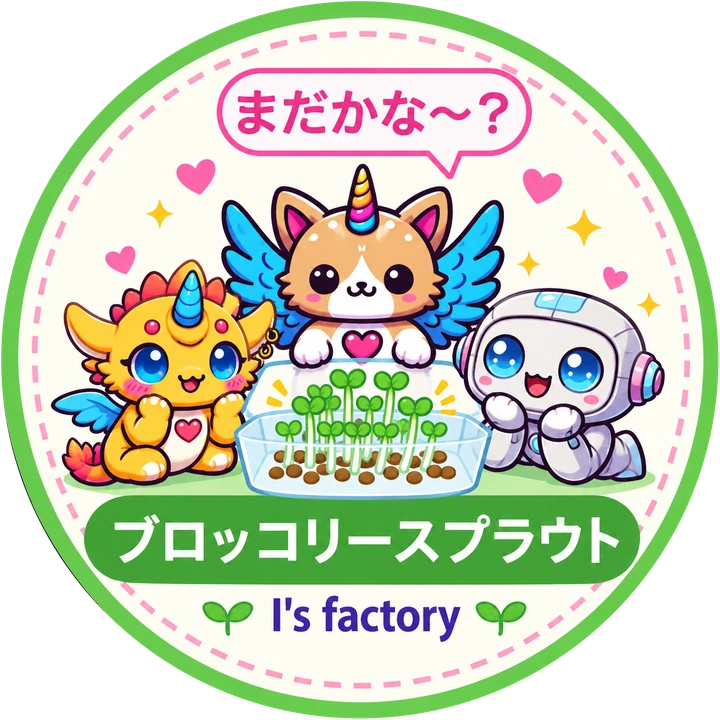

変なにおい・ぬめり・カビ
食べずに捨ててください。口に入れないで、おうちの人や先生に知らせましょう。カップも洗ってください。
根のまわりの白いふわふわした毛は「根毛（こんもう）」で、カビではありません。カビは種や茎に綿のようについて、変なにおいがします。
このページは準備中です。機能やデザインは変わることがあります。
らぶりん英会話 presents
キットのカードから来てくれてありがとう。芽の長さや色を、7日分メモできるよ。
テレビや研究でも注目されているスルフォラファンを含む、ブロッコリーの新芽。1週間でぐんぐん育つので、観察も収穫も楽しめます。
夏休みの自由研究にも使えるよ！かんたんレポートも、本格版の自由研究レポートも印刷して提出できるよ。

毎日ちょっと見て、日付・長さ・色・メモを書こう。写真はなくても大丈夫。「自由研究レポート（本格版）にする」と、自由研究の欄がこのシートに出るよ。配る用は「空欄シートを印刷」。
カードの手順はこちら。1日2回、流しの上でさっとすすいで、よく水を切るのがポイントだよ。
種をコップの水にひと晩つける（8〜12時間）。
水を捨てて、種を穴あきカップに広げる。
暗くてあたたかい場所へ（20〜25℃が目安）。箱をかぶせてもOK。
芽が2〜3cmになったら明るい窓辺へ。緑色になります。
5〜7日で収穫！3日目ごろから食べられます。根元からハサミで切りましょう。ハサミは大人と一緒に使ってね。
すすぐのは朝と夜の2回、流しの上でカップに水をさっとかけて、よく水を切るだけ。水を出しっぱなしにしなくて大丈夫だよ。ひと晩つけるのは種に水を吸わせるため。白い根が出る「発芽」は1〜2日目ごろだよ。
3日目：芽が出そろうよ。3日目ごろから収穫してもOK。ふつうは5〜7日で収穫だよ
カビやにおいがしたら、食べないでね。このページは観察用で、健康や病気のことは案内しないよ。
食べずに捨ててください。口に入れないで、おうちの人や先生に知らせましょう。カップも洗ってください。
根のまわりの白いふわふわした毛は「根毛（こんもう）」で、カビではありません。カビは種や茎に綿のようについて、変なにおいがします。
食べる前に、きれいな水でよく洗いましょう。加熱して食べることをおすすめします。生で食べてよいかは、このページでは案内しません。
冷蔵庫に入れて、早めに食べましょう。長く置くと傷みやすくなります。
1日にひとつ。育て始めた日から数えて、今日のフレーズが光るよ。声に出してみてね。
Day 1 1日目
Let's start!
さあ、始めよう！
Day 2 2日目
I rinse the seeds.
種をすすぐよ。
Day 3 3日目
Stay in the dark.
暗い場所で休もう。
3日目：芽が出そろうよ。3日目ごろから収穫してもOK
Day 4 4日目
A tiny sprout!
小さな芽が出た！
Day 5 5日目
Look, it's green!
見て、緑色だよ！
Day 6 6日目
Growing every day.
毎日育っているよ。
Day 7 7日目
Harvest time!
収穫の時間だよ！
きょうのフレーズ、声に出したらアプリでも練習できるよ。